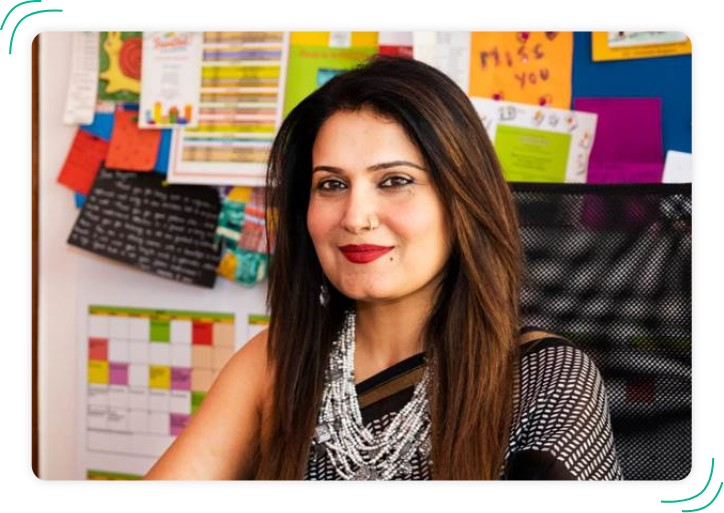
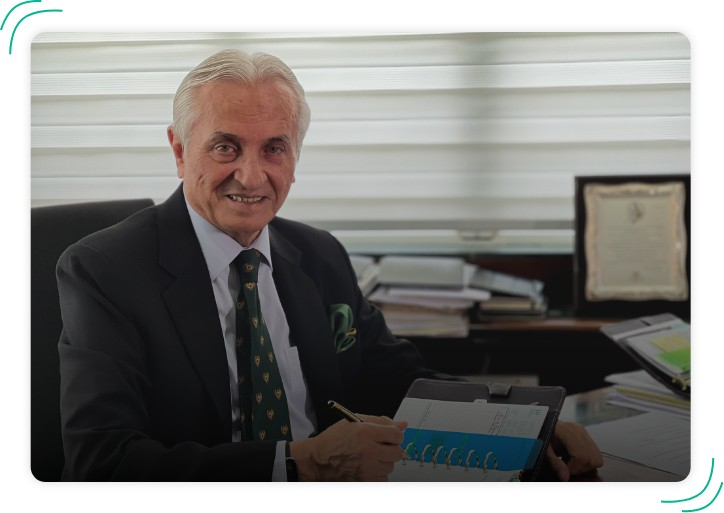

Head of Centre
Ms. Priyanka Khurana.
Ms. Priyanka Khurana has 15+ years of experience as an educator and in
depth knowledge of American curriculum and IB curriculum. Ms. Priyanka
comes with Master in Business and Teaching degree from Southern
Methodist University, Dallas, United States. She is deeply passionate about
creating a culture of learning that deepens student engagement and brings
in diverse perspectives.
Principal of Indus International School,
Bangalore
Mrs. Sarojini Rao
Mrs. Sarojini Rao, Principal of Indus
International School, Bangalore since July 2005, has exceptional academic credentials. She
ranked first at the University of Pune in B.A Economics and holds three postgraduate degrees –
Economics, Education and Business Administration from the University of Edinburgh.

From the CEO/ MD's desk
LT. GENERAL ARJUN RAY, PVSM, VSM
(RETD.)
A soldier-scholar of the Indian Army, Lt. General Arjun Ray, PVSM, VSM (Retd.) has wide-ranging experience in matters of defence and conflict management, but he also has a deep-rooted passion for social transformation. He is the CEO/MD of the Indus Trust and provides vision and strategic direction to all Indus International Schools and Institutions.

Trustee
Mr. H.B. Jairaj
Mr. H B Jairaj, the Chairman of HRB Group of
companies, has an MBA (Finance) from Case Western Reserve University, USA, and is a
prominent industrialist from Karnataka. Mr. Jairaj has guided his group of organizations
into successful ventures across diverse enterprises. His group’s various interests include
real estate, hotels/serviced apartments, restaurants, and healthcare facilities.
Trustee
Dr. Kumar Malavalli
Kumar Malavalli is an entrepreneur, renowned philanthropist and visionary in
the field of storage networks. He is the co-author and driving force behind Fibre Channel, an evolutionary
technology that enabled the development of production-class Storage Area Networks (SAN’s). He is also the
Co-founder and former CTO of Brocade Communications; Co-founder, Chairman and CSO of InMage Systems; and
the CSO of LeadFormix.


Trustee
Professor Shivram Malavalli
Prof. Shivram Malavalli is currently the Chairman of Indian Institute of
Production Engineers, Senior Advisor at World Association of Small & Medium Enterprises and General
Secretary of the Indian Science and Technology Entrepreneurs Parks Association. Professor Shivram
Malavalli guides all the ICT and Telecommunication initiatives at Indus, shaping it into one of the best
international schools in Bangalore, with remarkable technological capability
Trustee
Mr. Sushil Mantri
Mr. Sushil Mantri, the Chairman & Managing
Director of Mantri Developers Pvt. Ltd, is an outstanding personality in the world of
realty, housing and construction. He is a visionary with an astute and resolute sense of
enterprise, who has transitioned from being an entrepreneur to an industry trendsetter.